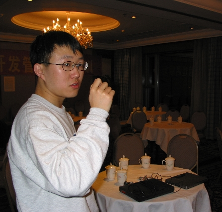
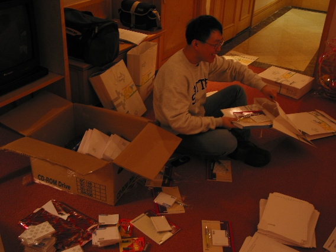
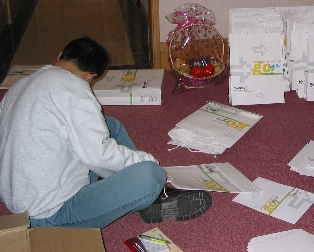
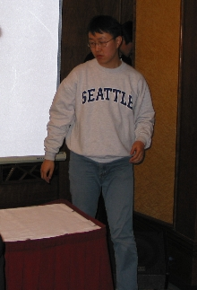
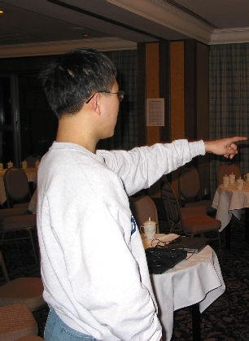
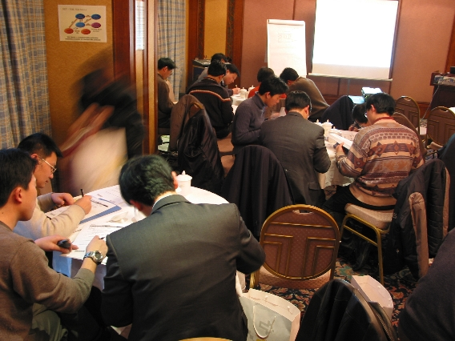
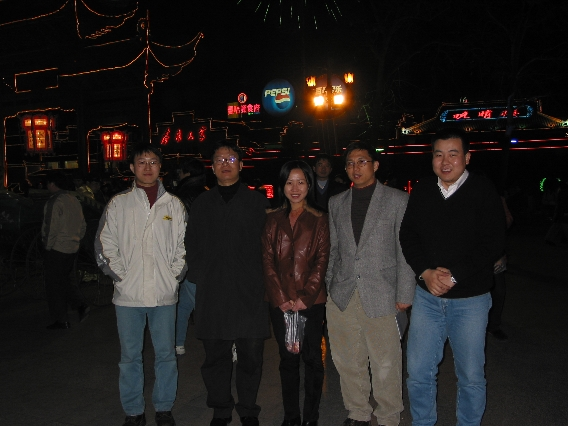
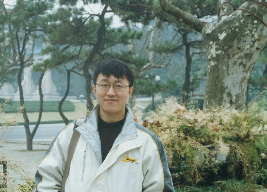
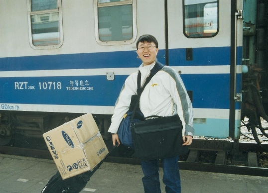

| See also:
|
It is February 7, 2002 and I just got back from the one week tour of Nanjing. The propose of this trip to Nanjing is to deliver the Microsoft Development Management Advanced Training to local software companies in Nanjing.
This was my third trip to Nanjing and by far is one of the best. Here are the details. Be sure to share some happiness of mine.
I was hosted in my favorite Hilton hotel. For the first night, I met with our partners and had a wonderful dinner with them. Then I return to the Hotel to enjoy the large room they provide. As the pioneer, I was responsible for the venue investigation. It turned out to be great. I didn't took too much effort in setting up everything. This is the first time I deal with the staff in the five-star hotel. Fortunately, they are very friendly and helpful. Below is the picture I took during the course of the arrangement of the venue for the training. The tables were in place with cups and teas ready.

Before the training officially starts, my colleagues and I took the responsibility to package everything into the bags. This is how we work together. In respect to their privacy, I cut their images out of the picture. I am the assembler of everything and put them into a single bag. There are others to prepare the pens and notepads and those who prepare the agendas and instruction notes. It was such a happy time. I enjoy assembling the bags so much. As you can see from the picture, we brought almost everything from Shanghai to Nanjing.

Finally, we managed to package the about 30+ packages before the training began. In the photo, you can the rows of packages ready to be delivered.

Actually, this is the last bag of the 30+ bags I was assembling. Don't know why, I love to sit on the carpet in Hotels. So I expect carpet instead of wood floor in my future home.

I was preparing for the projector and the screen system. Since this project is simple, I have to take care of everything from power supply to projector....

Ordering to move the screen to the right position....
Now, everything is ready to go. Posters hang on the walls, tables setup, cups
and stationeries ready... We were waiting for the trainees to come the next day.
After the training of the first day, we visited Yi Xue Company, a startup by a group of graduates. They are providing e-learning solutions to universities and large corps. Yi Chen, our senior consultant who just returned from Redmond, after developing Windows Media and Exchange Server for several years, was along with me during the visit.

This is the how we conducted the training. The trainees are fully engaged to the work we assigned and actively participate the activities we designed. It was such a successful training that 50% of trainees are VERY SATISFIED and 100% are satisfied with the training. I am so happy about the result and feel very confident about the future of the training program.

The all in one photo of me, my manager, Hong-Wei Hua, Helen Xu, Yi Chen and Peng Gao before the famous Qin Huai River.
Note: All photos above were taken by Peng Gao.

At last, we took one hour trip to the famous Zhong Shan Lin by taxi, took the picture and directly went to the railway station.

Look at this photo and see how much baggage I was carrying. Do you know what is in the paper box? A full box of books and stationeries. It is very very heavy. I took this photo and return to Shanghai.
See also:
Travel from Shanghai to Nanjing
© Copyright 2002 Jian Shuo Wang. All right reserved.
{kind=link}